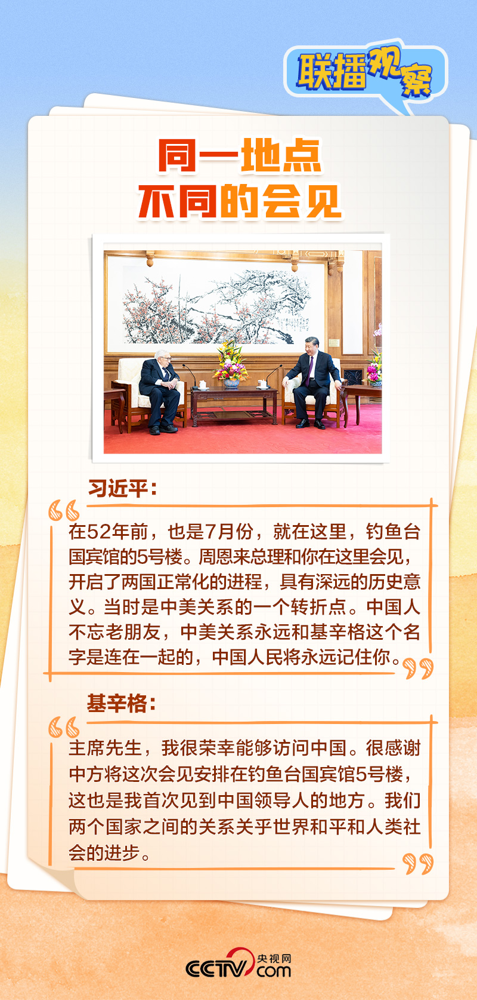

联播+ | “双百”人瑞再访华，这些细节意味深长
联播+
“中国人重情讲义，我们不会忘记老朋友，不会忘记你为推动中美关系发展、增进中美两国人民友谊作出的历史性贡献。”7月20日，国家主席习近平在钓鱼台国宾馆会见美国前国务卿基辛格。
基辛格刚刚度过百岁生日，访问中国已有一百多次，为推动中美关系正常化作出过重要贡献，被誉为见证中美关系发展的“活化石”。当下，拥有两个“一百”的基辛格再度访华，让此行具有了特殊意义。
